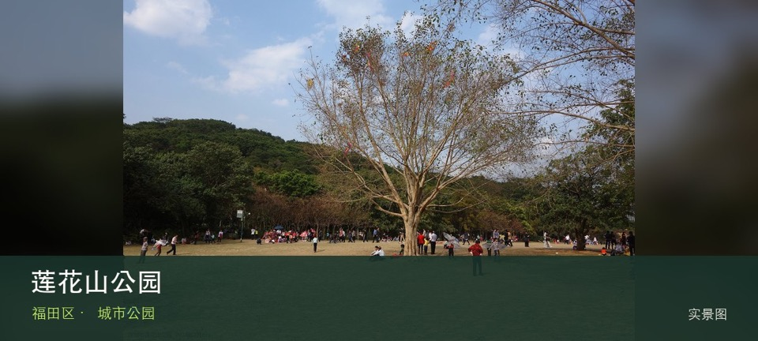

适合谁
适合初访深圳、亲子、长者和只有一至三小时的人；追求连续山野者应另选郊野公园。

SHENZHEN GUIDE · 001
莲花街道 · 城市公园
莲花山公园位于莲花街道，南侧草坪、莲花湖和约百米主峰把休闲、亲子活动与福田天际线放进一条可伸缩的城市游线。现场不必追求一次走完，先在风筝广场开阔草坪与莲花湖水岸之间确定主线，再按体力、日照和天气保留折返方案。山地、滨水或林下路面会随降雨改变，当天预警和开放边界始终比旧轨迹更优先。
WHY GO
适合初访深圳、亲子、长者和只有一至三小时的人；追求连续山野者应另选郊野公园。
从少年宫侧进入，先走草坪与湖区，再按人流、体力和天气决定是否登主峰。
地铁少年宫站 F1 口步行约 3 分钟；入口较多，可按实际游线从少年宫或市民中心片区返程。
中心区周末停车压力大，优先地铁；自驾只进周边正规公共停车场，入口满位时不要排队占道。
10 月至次年 4 月较舒适；4—9 月湿热且雷雨集中，强降雨前后不进入山脊、溪谷、陡坡或低洼路段。
NEARBY IDEAS
 授权实景图
授权实景图
深圳市关山月美术馆位于莲花山南侧，以关山月艺术研究、近现代中国美术与当代专题展为核心，位置适合与莲花山形成自然和艺术的一日短线。
 授权实景图
授权实景图
深圳市当代艺术与城市规划馆位于市民中心，双馆建筑把当代艺术展览与城市规划叙事并置，大尺度中庭和连续展厅本身就是理解深圳公共文化雄心的一部分。
 编辑配图·非现场实景
编辑配图·非现场实景
深圳市工业展览馆位于市民中心，展陈以深圳制造业、战略性新兴产业与工业设计演进为主，适合把城市天际线背后的产业系统补进同一天行程。